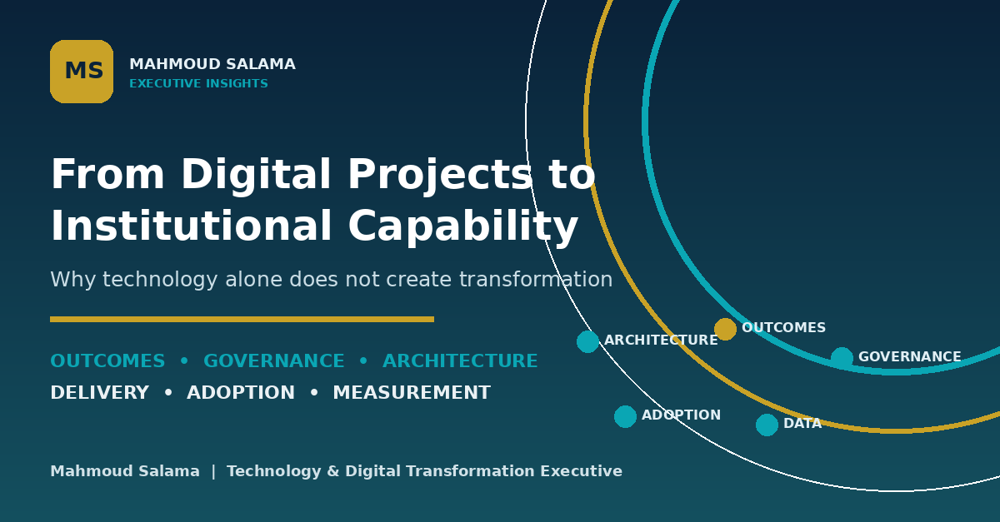

From Digital Projects to Institutional Capability
Why technology alone does not create transformation. A practical framework covering outcomes, evidence, governance, architecture, delivery, adoption and continuous improvement.
Executive Insights
Practical leadership perspectives on governance, enterprise architecture, data, delivery, adoption and measurable value.

Why technology alone does not create transformation. A practical framework covering outcomes, evidence, governance, architecture, delivery, adoption and continuous improvement.